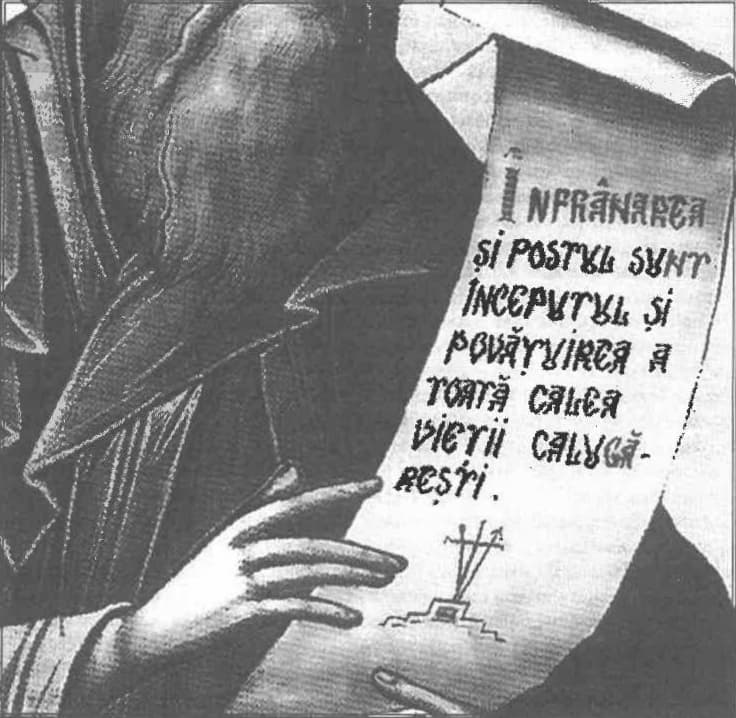

Care este Biserica cea adevărată?
Într-o lume liberă, a alege una din mai mule posibilități este un lucru obișnuit. Dar în ziua de azi, a manipulărilor și înșelătoriilor, a discerne binele de rău și a alege binele este un lucru din ce în ce mai greu. Or, în viața religioasă, acest lucru este esențial. Care este biserica cea bună, cea adevărată, cea mântuitoare? Toate bisericile creștine? Toate bisericile apostolice? Biserica națională? Cea în care ai fost botezat? Cea în care ai trecut prin urmarea soțului/soției? Nu, ci Biserica care a păstrat neschimbată dreapta credință, așa cum ne-a fost dată de Domnul Hristos și apoi de Duhul Adevărului (In. 16, 13), de Duhul Sfânt care a vorbit prin sfinți și prin sinoadele ecumenice, ale căror hotărâri au fost acceptate de întreaga Biserică (sinod, cler și credincioși), adică Biserica care a păstrat dreapta credință (orto-doxă) așa cum ne-a fost dată prin Sfânta Scriptură și Sfânta Tradiție. Aceasta este una singură: Biserica Ortodoxă.
Desigur însă, așa cum nu există om fără de păcate, tot așa nu există biserică fără iude, și așa este și Biserica Ortodoxă. Dar nu Iuda cel spânzurat a creat Biserica, ci Hristos cel răstignit și înviat. De aceea, Biserica nu trebuie aleasă după faptele oamenilor din ea (mai ales dacă suntem înclinați să vedem mai lesne faptele iudelor, nu ale sfinților), nici după originea ei apuseană (romană) sau orientală (slavă, greacă) și nici după limba vorbită (latină sau slavă). Au și acestea (ce țin de oameni) importanța lor pentru mântuire, dar când alegem Biserica, alegem dreapta credință, care e de la Dumnezeu: „căci în har sunteți mântuiți, prin credință, și aceasta nu e de la voi: este darul lui Dumnezeu; nu din fapte, ca să nu se laude nimeni” (Ef. 2, 8-9). Pentru un creștin, este important mai întâi a alege credința cea dreaptă și respectiv Biserica cea mântuitoare, și abia apoi faptele devin importante pentru mântuire: „Vrei însă să înțelegi, omule nesocotit, că credința fără de fapte moartă este? …Căci precum trupul fără suflet mort este, astfel și credința fără de fapte, moartă este” (Iac. 2, 20,26). Căci dacă am ales o credință eretică și faptele din credință pot fi eretice și spre osândă, nu spre mântuire.
Alege deci întâi Biserica Ortodoxă și dreapta ei credință, apoi străduiește-te ca, din credință, să faci fapte bune (Tit. 3, 8; Filim. 1, 6) și, cu timpul, vei vedea că faptele bune le vei face de Ia sine: „pentru că a Lui făptură suntem, zidiți în Hristos Iisus spre fapte bune, pe care Dumnezeu le-a gătit mai înainte, ca să umblăm întru ele” (Ef. 2, 10;) și deoarece „credința este lucrătoare prin iubire” (Gal.5, 6).
Alege Biserica Ortodoxă, pe care nici „porțile iadului nu o vor birui” (Mt. 16, 18), așa cum nu au biruit-o nici ereticii și nici stăpânirile ce s-au succedat, ci au întărit-o! Biserica este biruită atunci când își schimbă credința (dată de Dumnezeu) după cum vrea lumea, pentru a fi pe plac lumii, nu lui Dumnezeu. Dar, de multe ori, pentru a fi pe plac lui Dumnezeu, lupta este până la sânge. Așa a fost lupta românilor ortodocși timp de sute de ani. Și așa va fi până la sfârșitul vremurilor, căci neadormiți sunt viermii ereziilor și ai stăpânirilor.
„În istoria neamului omenesc sunt trei căderi însemnate: a lui Adam, a lui Iuda şi a papei.”
Dacă vorbim de Biserica Greco-Catolică (Unită cu Roma) din România, o realitate se impune: toți oamenii de cultură și politicienii români greco-catolici, în lupta lor pentru dreptate, libertate și unitate națională, nu au reușit să facă atât bine țării, cât rău și câtă dezbinare au făcut tot ei, urmând biserica din care făceau parte! De aceea, unirea (revenirea la ortodoxie) rămâne cea mai bună soluție, iar la porunca lor „Înapoi în staul!”, noi le răspundem și îi rugăm „Înapoi la Hristos!”. Căci dreapta credință ne arată că a fi unit cu papa înseamnă a fi dezbinat cu Hristos, iar realitatea istorică ne arată că a fi unit cu Roma înseamnă a fi dezbinat cu România. Cu alte cuvinte, în problemele esențiale, uniții au fost și sunt mai întâi cu papa și apoi cu Hristos (și cine nu-L pune pe Dumnezeu pe primul loc, nu-L pune pe nici un loc) și au fost și sunt mai întâi uniți și apoi români.
La început, Biserica Greco-Catolică a fost ca un „mistreț în via Domnului” (în Biserica Ortodoxă), iar acum este ca o sită prin care sunt cernuți românii ortodocși. Cei care rămân în sită sunt cei cate intraseră în Biserica Ortodoxă fără „haină de nuntă” și pe care Mirele i-a dat afară. Îmbrăcați haina de nuntă (haina cea dintâi — Lc. 15, 22) și intrați din nou. Vă așteptăm cu nădejde și cu bucurie.
Nu toți din Biserica Ortodoxă se mântuiesc, dar ea este poarta raiului. Este cea mai strâmtă poartă, dar este așa pentru ca nici cei preatrupești să nu poată intra în rai și pentru ca nici Lumina din rai să nu vină să ne veteme cât suntem preatrupești. Și, cu cât ne apropiem de poartă, cu atât ne luminăm și din preatrupești devenim duhovnicești.
Căderea papei și… întoarcerea lui.
Am putea spune că, observând diavolul dorința de slavă a papei, care se considera cap al Bisericii (asemenea lui Hristos ca putere, nu și ca dragoste și smerenie), l-a supus celor trei ispite, așa cum L-a ispitit și pe Iisus. Dar, cel puțin la ispita măreției, a puterii lumești (a stăpânirii tuturor împărățiilor lumii), papa nu a rezistat așa cum a rezistat Iisus. („Din nou diavolul L-a dus pe un munte foarte înalt și I-a arătat toate împărățiile lumii și slava lor. Și I-a zis Lui: Acestea toate ți le voi da Ţie, dacă vei cădea înaintea mea și Te vei închina mie. Atunci Iisus i-a zis: Piei, satano, căci scris este: „Domnului Dumnezeului tău să te închini și Lui singur să-l slujești”. Atunci L-a lăsat diavolul și iată îngerii, venind la El, Îi slujeau” - Mt. 4 și Lc. 4). Și, de fapt, orice apostol al lui Hristos, care-i urmează lui Hristos, trebuie să se aștepte să fie supus acestor 3 ispite căci: Așa cum Tu M-ai trimis pe Mine în lume, tot astfel i-am trimis Eu pe ei în lume — In. 17, 18.
Analizând versetele din Luca 22, 31-34 („Și a zis Domnul: Simone, Simone, iată satana v-a cerut să vă cearnă ca pe grâu; Iar Eu M-am rugat pentru tine să nu piară credința ta. Și tu, oarecând, întorcându-te, întărește pe frații tăi. Iar el I-a zis: Doamne, cu Tine sunt gata să merg și în temniță și la moarte. Iar Iisus i-a zis: Zic ție, Petre, nu va cânta astăzi cocoșul, până ce de trei ori te vei lepăda de Mine, că nu Mă cunoști”), trebuie remarcat că, atunci când Domnul i-a spus lui Petru că satana îi va cerne (încerca, ispiti), nu se referea de fapt la cele 3 lepădări înainte de cântatul cocoșului, acestea fiind doar o imagine-exemplu în mic a ceea ce se va întâmpla la scară mare (istorică), ci se referă la cele 3 ispitiri la care a fost supus și Iisus și la care papa nu va rezista. Și tocmai pentru că nu va rezista, Domnul Hristos S-a rugat pentru el (Iar Eu M-am rugat pentru tine să nu piară credința ta. Și tu, oarecând, întorcându-te, întărește pe frații tăi), iar după Înviere I-a întărit pe Petru, întrebându-l de trei ori (în vederea celor 3 ispitiri) „Simone… Mă iubești?” și poruncindu-i de 3 ori „Paște oile Mele” și „Urmează Mie” (In. 21, 15-19). L-a iertat pentru cele 3 lepădări și l-a și întărit pentru cele 3 ispitiri.
Fariseii catolicii însă, au falsificat traducerea și respectiv interpretarea versetului „Iar Eu M-am rugat pentru tine să nu piară credința ta. Și tu, oarecând, întorcându-te, întărește pe frații tăi”, în loc de „să nu piară” punând „să nu scadă”. Or, este o distanța de la cer la pământ, la propriu (!), deoarece credința aflată în pericol de a pieri este credința la limita ei cea mai de jos, cea mai slabă (Mt. 14, 30-31: Petru: Doamne, scapă-mă!; Iisus: Puțin credinciosule, pentru ce te-ai îndoit?), pe când credința care nu scade, statornică, este la limita ei cea mai de sus. Dată ar fi rămas statornic în credință (credința nescăzând), atunci a doua parte a versetului nu ar mai avea logică (Și tu, oarecând, întorcându-te, întărește pe frații tăi), căci dacă nu a scăzut în credință, nu trebuie nici să se întoarcă de unde a (s)căzut.
Dar și aici viclenia rațiunii a fost incredibilă! Astfel, în loc de întoarcerea lui Petru la Hristos, la credința în Hristos, la credința dintâi, la dragostea dintâi, fariseii au spus că e vorba de faptul că Petru s-a întors (prin urmașii lui, papii) în locul lui Hristos! — vicar al lui Hristos. În actul prin care s-a promulgat dogma infailibilității papale (1870) este scris: „… acest scaun al lui Petru rămâne totdeauna neatins de orice eroare, potrivit cu această dumnezeiască făgăduință a Domnului Mântuitorului Nostru, făcută principelui ucenicilor Săi: «Eu m-am rugat pentru tine să nu scadă credința ta. Și tu, oarecând, întorcându-te, întărește pe frații tăi.» Acest dar al adevărului și al credinței care nu greșește [care nu scade] a fost așadar dumnezeiește atribuit lui Petru și urmașilor lui [papii]” (sublinierile ne aparțin). Iată deci că la baza infailibilității papei stă o traducere falsă și o interpretare falsă, de unde rezultă și o infailibilitate falsă.
Atât Filioque, cât și primatul papal și infailibilitatea papală, au fost însă soluții lumești/omenești de rezolvare a unor probleme bisericești, lucru pe care catolicii onești îl recunosc. Aceste soluții lumești, justificabile pentru înțelepciunea omenească, dar nu și pentru cea dumnezeiască, au transformat și Biserica Catolică în ceva lumesc (ea nefiind din lume), au transformat-o cu timpul în societate civilă și de caritate, în stat chiar (având bănci, serviciu de spionaj — Opus Dei, diplomați etc.), dar odată devenită parte din lume, Biserica Catolică nu a mai fost Trupul lui Hristos și deci nici capul ei nu mai e Hristos (om și Dumnezeu), ci doar un om: papa de la Roma. De aici și drama catolicilor și acum și a greco-catolicilor care, în cadrul Euharistiei, nu se împărtășesc cu Hristos, ci cu vicarul Lui, papa, nu se împărtășesc cu Hristos — Dumnezeu adevărat și om adevărat, ci doar cu un om! Un om care își pune acum pecetea pe faptele și gândurile catolicilor, pentru ca mai apoi să-și pună pecetea (numărul de om — Ap.13, 13-18) pe mâinile și frunțile lor. Încercați să înțelegeți ce înseamnă ca în loc de „mintea lui Hristos” să ai „mintea lui papa” sau ca în loc de „Nu eu trăiesc, ci Hristos trăiește în inima mea” să ai sentimentul că „Nu eu trăiesc, ci papa trăiește în inima mea” și veți înțelege consecințele trecerii la catolicism sau greco-catolicism.
Să luăm un exemplu concret și lămuritor privind Biserica Catolică, și anume declararea infailibilității papei. Prin câștigarea suveranității absolute a statelor, s-a considerat că libertatea și unitatea Bisericii Catolice este grav amenințată, adică Biserica Catolică ar fi urmat să se împartă în Biserici naționale aflate sub controlul statelor respective. Iar ca soluție (lumească) s-a găsit ca, suveranității absolute a statelor să i se opună suveranitatea absolută (din punct de vedere uman) a papei. Biserica Catolică devine astfel un Imperiu Mondial Spiritual (cum a și fost numită de unul din papi), iar papa un monarh absolut și infailibil, pe care nimeni din afară sau de deasupra Bisericii (guverne, parlamente, șefi de stat) nu îl poate împiedica să acționeze pentru menținerea independenței Bisericii și pentru satisfacerea nevoilor ei. În același timp, papa devine și proprietarul tuturor bunurilor deținute de Biserica Catolică din toată lumea. Dar cum bisericile locale se aflau pe teritoriul altor state, Vaticanul a pornit o acțiune de încheiere a unor contracte (concordate) cu aceste state, contracte prin care toate privilegiile (drepturi, proprietăți) obținute de Biserica Catolică (și, indirect, și de clericii ei și uneori chiar de credincioșii ei) ies de sub orice control democratic al statului. Odată semnat acest concordat, statul nu-i mai poate anula nici un privilegiu (chiar antinațional fiind) fără acordul celeilalte părți semnatare: Vaticanul. Iată, într-adevăr, un mecanism politic infailibil, prin care Biserica Catolică devine stat în stat în orice țară, așa cum e Vaticanul în Italia. Și sunt destui puțincredincioși care sunt atrași de această perspectivă, dând întâietate celor lumești în detrimentul celor duhovnicești și uitând de mântuire! Căci Vaticanul este o realitate eminamente politică, având interese eminamente materiale și luptând pentru apărarea și extinderea catolicilor pe căi eminamente diplomatice, ca orice alt stat laic al scenei politice mondiale.

Un asemenea concordat s-a încheiat și cu România, el prevăzând, printre altele, că Biserica Greco-Catolică (deși Biserică Românească) este înglobată în cea Romano-Catolică, adică devine proprietatea papei. Liberalul greco-catolic I.C. Brătianu a dus tratativele (1926), iar alt greco-catolic, Vasile Goldiș (ministru al cultelor), merge la Roma și semnează concordatul (10 mai 1927). N. Titulescu (în 1928) consideră concordatul o mare greșeală politică și cere Vaticanului niște „declarații interpretative” fără de care ratificarea concordatului e imposibilă, dar papa refuză. În 1929, Partidul Național-Țărănesc al greco-catolicului Iuliu Maniu ratifică concordatul, în ciuda argumentelor și protestelor Bisericii Ortodoxe și deși se încălca Constituția României din anul 1923. În fine, comuniștii au denunțat concordatul în 1948, iar greco-catolicii au revenit la ortodocși în același an (se afirmă că au făcut-o de teama comuniștilor, ceea ce e perfect logic, dar nu și în întregime adevărat! - adevărul este că cei mai mulți dintre ei s-au folosit de această teama de comuniști ca de un pretext și ca de o ocazie pentru a reveni la ortodoxie).
După 1990 s-a încercat reactivarea Concordatului României cu Vaticanul. În 1997 preotul greco-catolic Ioan Francisc Moisin, senator PNȚCD, a făcut această propunere legislativă (care este anticonstituțională și a fost respinsă). „Ioan Moisin… Corneliu Coposu, Ion Rațiu, Emil Constantinescu, Călin Popescu Tăriceanu și alți lideri ai partidelor istorice din România (afiliate la Internaționala Creștin Democrată — condusă de Vatican) au susținut votarea de legi prin care, azi, să se restabilească proprietățile obținute de Vatican în Ardeal prin ratificarea Concordatului cu România”. În 2004, Adrian Năstase elaborează ordonanța 64 prin care li se acordă greco-catolicilor dreptul de a acționa în instanță Biserica Ortodoxă pentru retrocedarea bisericilor și teritoriilor avute din timpul Imperiului Austro-Ungar. Apoi catolicul Călini Popescu Tăriceanu (prim ministru), Monica Macovei (ministrul Justiției) și Mona Muscă (ministrul Culturii și Cultelor) au cerut punerea în aplicare a ordonanței 64/2004. Parlamentul o respinge și atunci guvernul pune în aplicare pe propria răspundere un pachet de legi privind retrocedările1.
Iată cum, o soluție lumească adoptată de Biserica Catolică a dus atât la laicizarea ei, cât și la dezbinare în cadrul Bisericii Ortodoxe.
„Iar Eu M-am rugat pentru tine să nu piară credința ta. Și tu, oarecând, întorcându-te, întărește pe frații tăi.” Deci urmașul lui Petru - papa a căzut în ispita slavei lumești, iar Domnul S-a rugat pentru el să nu-i piară credința. Acum ar urma ca papa, „oarecând, întorcându-se la dreapta credință, să întărească pe frații săi catolici”. Când va fi acest „oarecând” nu știm, dar, conform unei profeții, acesta sau următorul papă va fi și ultimul. Sunt două posibilități:
- Ori papa se va numi patriarh ecumenic, prin întoarcerea la Hristos și la dreapta credință,
- Ori se va autointitula Hristos sau Mesia, considerându-se pe sine ca fiind Hristos la a doua Sa venire (iar noi, ortodocșii, numindu-l antihrist — să nu fie!). Este posibilă și această a doua variantă pentru că, dacă în 1870 au interpretat versetul de mai sus în sensul că papa s-a întors în locul lui Hristos (ca vicar, ca înlocuitor al lui Hristos pe pământ), în viitor ar putea interpreta că papa s-a întors ca Hristos (ca mântuitor). Și ar face-o tot dintr-o rațiune omenească, lumească, din rațiuni de stat, pentru supraviețuirea (materială, nu spirituală) Bisericii într-un mediu total ostil. Și infailibilitatea papei a fost proclamată într-un moment de înfrângere și umilire a Bisericii Catolice de către statul italian, acest lucru creând un puternic impact emoțional care a pus în umbră imaginea înfrângerii și umilirii. Observați că s-a folosit un procedeu folosit des azi de politicieni pentru a distrage atenția opiniei publice de la un anumit eveniment prin crearea și exaltarea în media a altui eveniment.
După ce Domnul l-a întărit pe Petru întrebându-l de 3 ori dacă Îl iubește și apoi spunându-i „Paște oile Mele” și „Urmează Mie”, „întorcându-se, Petru a văzut venind după el pe ucenicul pe care-l iubea Iisus, acela care la Cină s-a rezemat de pieptul Lui și I-a zis: Doamne, cine este cel ce Te va vinde? Pe acesta deci, văzându-l, Petru a zis lui Iisus: Doamne, dar cu acesta ce se va întâmpla? Zis-a Iisus lui: Dacă voiesc ca acesta să rămână până voi veni, ce ai tu? Tu urmează Mie. De aceea a ieșit cuvântul acesta între frați, că ucenicul acela nu va muri; dar Iisus nu i-a spus că nu va muri ci: dacă voiesc ca acesta să rămână până voi veni, ce ai tu?” - In. 21, 20-23. Putem înțelege de aici că Biserica pe care o păstorește ucenicul pe care-l iubea Iisus va rămâne până la a doua Lui venire, iar Biserica pe care o păstorește Petru nu va rămâne până ce va veni Hristos a doua oară: ori se va stinge (seculariza și apostazia), ori va fi asimilată (înglobată) în Biserica ucenicului pe care-L iubea Iisus. Fiind vorba de o biserică cu credință statornică, Biserica ce va rămâne până ce va veni Hristos nu poate fi decât Biserica Ortodoxă. Ea s-a menținut nu prin soluții lumești de supraviețuire, ci duhovnicești, nu prin prozelitism, ci prin propovăduire, nu prin apărarea proprietății, ci prin apărarea credinței, nu prin războaie de ocupație și cruciade, ci prin martiraj, timp de două mii de ani.
Note
1 Carol Hârșan, Georgiana Arsene, Absurdul inter-confesional. O analiză a conflictului ortodox — greco-catolic din România (după decembrie 1990), Ed. Vicovia, 2009, p. 14, 41.
AXA NOASTRĂ: ÎNTRE DUMNEZEU ȘI NEAMUL ROMÂNESC
Comentarii